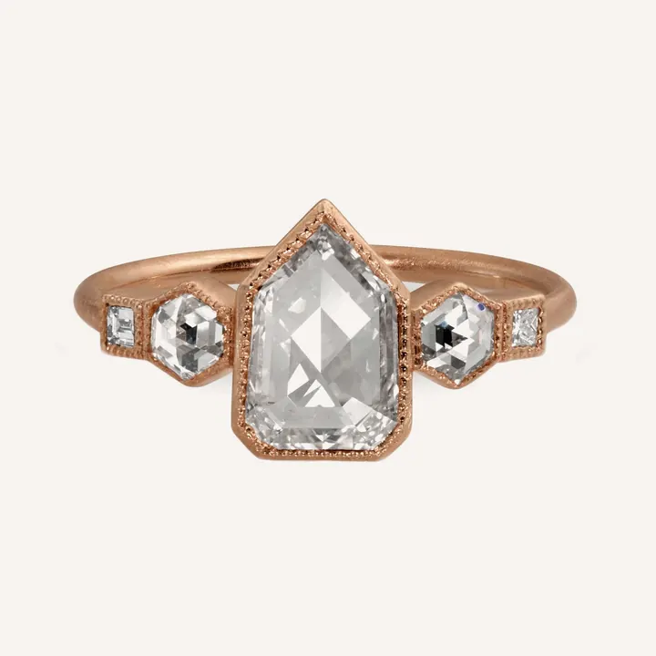

HPHT 與 CVD：兩條培育鑽石的科技路線
地底需要數十億年的事，實驗室用兩條科技路線在數週內完成——HPHT 像壓力鍋，CVD 像蓋積木。

核心定義
培育鑽石有兩大主流技術。HPHT（High Pressure High Temperature，高溫高壓法）把石墨或鑽石粉放在金屬觸媒中，模擬地幔的極端條件——約 1500°C、5～6 萬大氣壓——讓碳溶解後在鑽石種晶上結晶。CVD（Chemical Vapor Deposition，化學氣相沉積法）則在低壓反應腔裡，把甲烷與氫氣電離成電漿，碳原子一層層「貼」在鑽石種晶上生長。
兩條路線殊途同歸：產出的都是純碳、立方晶系的真鑽石。差異在生長條件、晶體型態與可供鑑定的特徵，也影響成本與尺寸——CVD 近年因成本優勢成為主流，HPHT 則在部分彩色培育鑽與大顆成長上有表現。
特徵與分類
| 項目 | HPHT | CVD |
|---|---|---|
| 原理 | 高溫高壓＋金屬觸媒 | 低壓電漿沉積 |
| 生長速率 | 較快 | 較慢但可精控 |
| 晶體型態 | 立方體＋八面體混形 | 板狀層狀生長 |
| 常見顏色 | 無色～黃、藍、粉（可致色） | 無色為主（可改色） |
| 特徵內含物 | 金屬觸媒殘留（針點、片狀） | 層狀生長紋、暗色碳夾層 |
HPHT 鑽石常殘留金屬觸媒（鐵、鎳、鈷），在強磁場下甚至會被磁鐵吸引——這是鑑定師的捷徑之一；CVD 鑽石則以層狀生長紋與特定光譜缺陷（如矽空位 SiV）聞名。
科學原理
HPHT 的關鍵是「觸媒溶劑」：純碳極難熔解，但熔融的金屬（鐵鎳等）能溶解碳，讓碳原子在壓力梯度下輸送到種晶表面結晶。CVD 的關鍵則是「電漿」：甲烷分子在電漿中被拆解，氫原子會刻蝕非鑽石碳（石墨），留下鑽石晶格慢慢長高。
兩種技術都可長出高品質無色鑽石，但 CVD 晶體往往帶有輕微的應力與層狀結構；HPHT 則常帶硼殘留（偶發藍色）與金屬內含物。這些特徵，就是實驗室鑑定「出身」的線索。
鑑定與鑑別方法
- 顯微鏡找金屬內含物（HPHT）與層狀生長紋（CVD）
- 紅外光譜測氮/硼含量與聚集形式
- 光致發光（PL）光譜找 SiV、NV 缺陷
- 強磁鐵測試：HPHT 金屬殘留多時可能被吸引
- 對照腰圍雷射標記與證書來源欄位
市場行情與保養建議
市售培育鑽石以 CVD 居多、HPHT 較少，但兩種都有完整 4C 分級證書。挑選時不必執著技術路線，重點是證書與品質；兩者的價格都隨技術進步持續下降，同品質下通常無明顯價差。
若你買的是「二手培育鑽」，鑑定來源就更重要——實驗室報告能確認是否為培育鑽、以及是否經過改色等處理。
常見誤區
兩種技術都能產出頂級無色鑽石，品質高下看具體晶體與切磨，而不是技術名。迷信某一路線，和迷信品牌一樣，都是行銷話術。
培育鑽石同樣有 4C 差異，同樣需要分級；晶體品質、切工好壞、證書機構都會影響它的價值與美觀。
冷知識
5～6 GPa 約等於地下一百多公里的壓力。科學家把「地心」搬進實驗室，才有了今日的培育鑽石產業。
CVD 最早用於半導體鍍膜。把長晶片的技術拿來長鑽石，是材料科學的意外跨界。
反直覺觀點
金屬觸媒殘留多時，HPHT 鑽石會被強力磁鐵吸引——一顆號稱「完美無瑕」的鑽石能被磁鐵吸住，這正是培育技術留下的科學指紋。
地底生長靠運氣，實驗室生長靠參數。所以培育鑽石的高色階、高淨度比例常高於天然——科技壓縮了「隨機性」。